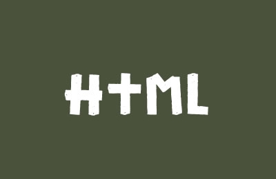
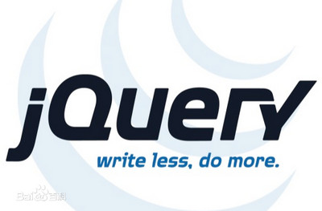
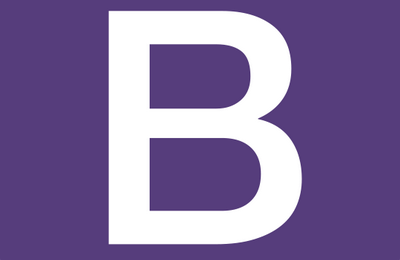

白相敏同学
- 17858962496
- 电话:
- 信息与计算科学
- 数学系
- 数信学院
- 浙师大
- 高三
- 大一
- 大二
-
1.叛逆期来的比较晚,觉得学习没有用,不然就不用来浙师大了,哈哈
-
2.报志愿的时候选择这个专业,其实是没找到自己的兴趣,选择了这个和数学关系比较大的专业,觉得以后考研转方向比较好转方向
-
3.其实自己一点也不喜欢当老师,虽然这个职业稳定,但对我来说,太稳定了,我更喜欢会给自己带来惊喜,有很多未知的职业
-
1.迷茫阶段
-
2.每天都很忙,但似乎又没做什么,不知道大学对自己来说什么最重要
-
3.虽然大一什么正事都没做,但确实看了很多其他东西,也算提高了自己视野;专业课方面,数学分析没学好,一直好后悔
-
1.寻找方向
-
2.知道自己需要做点什么,不能混日子,开始考虑自己以后是考研还是找工作,什么工作既让自己感兴趣,有让我感受到自己的价值
-
3.还要吐槽一点,关于计算机的课程,从c++,数据结构到java的课都是一个讲课没人听的懂的的老师教,心累...
暑假留校
每天学习前端
基础学习
HTML5 CSS3 Javascript jqery Bootstrape

项目实战
酒仙网首页 不知所措
关于前端
我的想法
为什么选择
价值
前景
前端吸引我的是什么?
在我心里前端的前景
一种源自极客精神，极致、好奇与改变之力
一种源于艺术与交互，是人与机器之间桥梁
自己写的页面可以让很多人看到,并且影响他们
机器可以完成的一定都是千篇一律,想要个性化,还要人来完成
有一天有可能网页的很多元素都是机器完成的
但一个网站的亮点一定需要一名优秀的前端工程师

HTML5 CSS3
HTML和CSS并不难理解。HTML为构成网页的主要语言。通过这种语言，我们可以向计算机说明网页格式、内容、显示效果等等。而CSS则是专门 用来控制网页显示效果的语言。 包括HTML5文档结构异同与创建HTML5文档、设计HTML5表单、HTML5音频与视频、CSS3概述，CSS选择器，定义文本、字体与颜色，设计背景和边框,设计多列和流动网页布局，优化用户界面以及CSS3的其他新特性

JavaScript jQuery
JavaScript是一种属于网络的脚本语言,已经被广泛用于Web应用开发,常用来为网页添加各式各样的动态功能,为用户提供更流畅美观的浏览效果。通常JavaScript脚本是通过嵌入在HTML中来实现自身的功能的 jQuery的语法设计可以使开发更加便捷，例如操作文档对象、选择DOM元素、制作动画效果、事件处理、使用Ajax以及其他功能。除此以外，jQuery提供API让开发者编写插件。其模块化的使用方式使开发者可以很轻松的开发出功能强大的静态或动态网页
